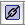

| PATH |

Understanding the connection between a component and its Java class file is an important part of WebObjects development. Not only do you associate methods with the component to create dynamic content in this fashion, but you can also use the methods provided by the WOComponent class to maintain state for a component.
When you add methods to a component in WebObjects Builder, you are actually editing the component's Java file. When you modify how the component looks or add display elements, you are editing HTML code. A WebObjects component is a high-level view of both the HTML code and the Java class that describe a Web page, or part of one. After using WebObjects Builder to define the major parts of a component, you can add details by editing the HTML code manually and by modifying its Java file.
When your application runs, components are instantiated as
needed. That is, each component is also an object in your application.
For example, when the DateDisplay application launches, a Main object
is created. As the component's content is determined by WebObjects,
methods in Main.java are used to provide
the data for its dynamic elements, in this case the WOString that
displays the current time. When it's time for WebObjects to add
the content for the WOString, it looks up the element's value binding. In
the example, value is
bound to the currentTime method.
WebObjects then invokes the currentTime method,
which returns the current time.
An instance of a component "survives" at least for two cycles of the request-response loop: in the first cycle the page is rendered while in the second cycle the component determines which component to display next. If the component to be displayed is different from the first one, the latter is discarded while an instance of the new component is created. However, if the component to display is the same one, then the instance "lives on." You can use instance variables in your component's class to store information and keep track of the user's behavior as she interacts with your application.
In this case, you'll add a variable to the Main component and add code to increment it each time the page is displayed. You can use this variable to show the number times the page has been loaded by a specific user in the session.
To keep track of the number of times the currentTime method
has been called, you need to add an integer instance variable to
the Main.java file, increment it each time
the page is loaded, and add a means of telling the page to refresh
itself.
Main.wo in
WebObjects Builder (if it's not already open) by double-clicking
it in Project Builder's main window.Main.wo window.int named loadCount.public class Main extends WOComponent {
protected int loadCount;To display the load count on the component, you need to add another WOString to the component.
Page
load count: " below the line that displays
the current time.loadCount variable
to the new WOString's value attribute.Modify the currentTime method
so it increments the loadCount variable
each time it is called. Since WebObjects calls the method each time
the page needs to be displayed, loadCount is
increased by one each time.
public NSTimestamp currentTime() {
loadCount++;
return new NSTimestamp();
}
Finally, you need to add a way to reload the page. In WebObjects, regular hyperlinks (WOHyperlinks) can call Java methods on your components. Action methods are covered in greater detail in "Request Processing". For now, you only need to add a method that simply reloads the current page.
Open the Main component in WebObjects Builder and choose Add Action from the Edit Source menu.
refreshTime.null from
the "Page returned" pop-up menu.The value returned by
an action method represents the next page (component) to be displayed.
When you return null,
the current page is redrawn. In a later task, you learn how to return
a new component.
Position the cursor below the line where the load count is displayed.
Choose WebObjects > WOHyperlink, or click  .
By
default, the text for a new link is "Hyperlink". You can replace
this by selecting the text and typing something more appropriate
over it, such as "Refresh Time".
refreshTime method
to the WOHyperlink.Much like a WOString, a WOHyperlink has
several attributes. In this case, you bind the refreshTime method
to the action attribute
of the WOHyperlink.
Drag from the refreshTime method
in the Main list to the WOHyperlink. When you release the mouse
button, you will see a pop-up list of attributes. Choose the action attribute
to indicate that you want the refreshTime method
called when the link is clicked.
Main.wo.Build and run the DateDisplay application. When your browser loads the page, you'll see that the counter has been increased to 1. If you click Refresh Page, the time and the load count are updated.
This same counter instance variable is increased by one each time you use the link because WebObjects created a Main object and associated it with your browser window. Each time you interact with the application, by clicking Refresh Page, the same object is used. If you open another browser window and connect to the application again using the URL shown in Project Builder's Run pane, a separate instance of Main is created and associated with that window. From then on you can work with both windows individually. As a matter of fact, not only is a new instance of Main created, a new Session object is created as well.
WebObjects determines that a new Session object needs to be created when the incoming URL does not contain a session ID. The first time you connect to the application using a URL like the one in Listing 4-2, WebObjects creates a Session object and assigns it a session ID and other information. That information is added to the URL returned to your browser together with the Web page to be displayed (see Listing 4-3). When you send another request from your browser (by clicking Refresh Page, for example) WebObjects uses the session ID encoded in the URL to locate the Session object that is to process the request. This is the default mechanism WebObjects uses to keep track of the state of each user. For more on state management see "Client-Server Applications".
Listing 4-2 URL that generates a new Session object
http://foo.com:49361/cgi-bin/WebObjects/DateDisplay
Listing 4-3 URL with session ID
http://foo.com:49361/cgi-bin/WebObjects/DateDisplay.woa/wo/whcV5sauLNtG8Tfh6xCuvM/ 0.1
© 2001 Apple Computer, Inc.